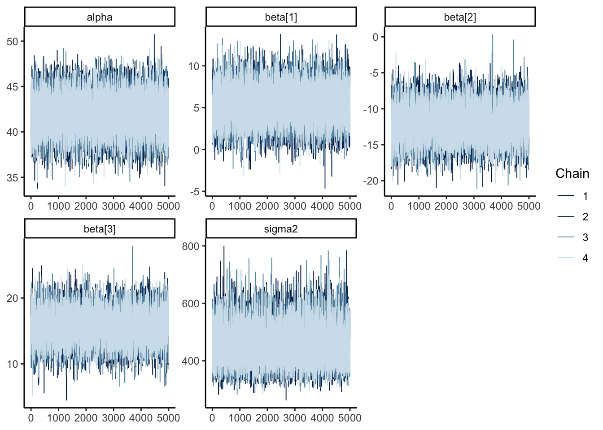
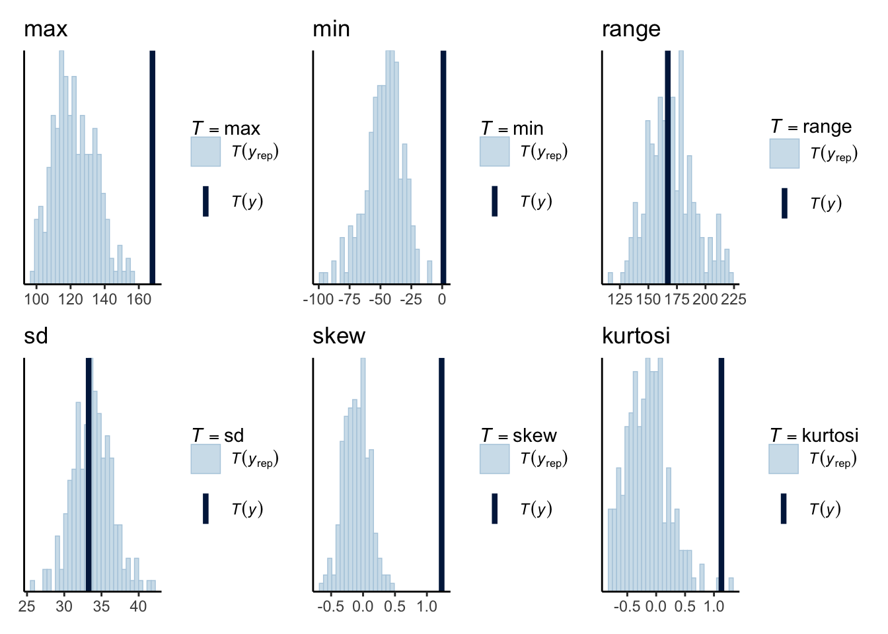

```{r setup}
#| output: hide
library(tidyverse)
library(ggplot2)
library(rjags)
library(posterior)
library(bayesplot)
library(gt)
library(purrr)
library(patchwork)
library(psych, include.only = c("kurtosi", "skew"))
theme_set(theme_classic())
```2
Download the airquality dataset in R. Fit the following model to the data
\[ \mathrm{ozone_i} \sim \mathrm{Normal}(\beta_1 + \beta_2\mathrm{solar.R_i} + \beta_3\mathrm{temp_i} + \beta_4\mathrm{wind_i}, \sigma^2) \]
Use posterior predictive checks to verify that the model fits well. If you find model misspecification, suggest (but do not fit) alternatives.
Solution:
d <- na.omit(airquality)
ozone <- d$Ozone
X <- d[ , c("Solar.R", "Wind", "Temp")] |> as.matrix() |> scale()
data <- list(
ozone = ozone,
X = X,
n = nrow(X),
p = ncol(X)
)
model_string <- textConnection("model{
#Likelihood
for (i in 1:n) {
ozone[i] ~ dnorm(mu[i], tau)
mu[i] = alpha + inprod(X[i, ], beta[])
Y_rep[i] ~ dnorm(mu[i], tau)
}
for (i in 1:p) {
beta[i] ~ dnorm(0, 0.001)
}
alpha ~ dnorm(0, 0.001)
tau ~ dgamma(0.01, 0.01)
sigma2 = 1 / tau;
}")
model <- jags.model(
model_string,
data = data,
n.chains = 4,
quiet = TRUE
)
update(model, 5000)
params <- c("alpha", "beta", "sigma2", "Y_rep")
samples <- coda.samples(
model,
variable.names = params,
n.iter = 5000
)
posterior_jags <- samples |>
as_draws_df()We first look at summary statistics and trace plots and see that our chains seem to have converged well.
posterior_jags |>
subset_draws(variable = c("alpha", "beta", "sigma2")) |>
summarise_draws() |>
gt() |>
fmt_number()| variable | mean | median | sd | mad | q5 | q95 | rhat | ess_bulk | ess_tail |
|---|---|---|---|---|---|---|---|---|---|
| alpha | 41.93 | 41.92 | 2.03 | 2.01 | 38.58 | 45.29 | 1.00 | 19,896.94 | 19,220.55 |
| beta[1] | 5.44 | 5.42 | 2.12 | 2.11 | 1.96 | 8.95 | 1.00 | 15,977.77 | 17,873.37 |
| beta[2] | −11.84 | −11.84 | 2.36 | 2.35 | −15.74 | −7.96 | 1.00 | 11,432.45 | 16,859.06 |
| beta[3] | 15.72 | 15.74 | 2.44 | 2.43 | 11.70 | 19.70 | 1.00 | 10,421.03 | 15,713.95 |
| sigma2 | 455.98 | 449.99 | 64.25 | 62.29 | 361.60 | 571.30 | 1.00 | 16,928.60 | 18,760.49 |
samples |>
mcmc_trace(
regex_pars = c("alpha", "beta", "sigma")
)
Then we can use the bayesplot package for easy posterior predictive checks. To do this we first create a matrix y_rep containing some of the draws from our posterior predictive distribution (PPD) we sampled using JAGS above. We choose to use only a subset of the posterior draws in order to make our plotting go faster.
First we look at the whole distribution of our predictions and compare it to the observed distribution in our data. We notice the observed distribution is right-skewed. This does not necessarily mean we should use a non-normal likelihood. It could also mean we simply didn’t capture enough of the variance in the data with the predictor variable available to us.
y_rep <- posterior_jags |>
subset_draws(variable = "Y_rep") |>
resample_draws(ndraws = 200) |>
as_draws_matrix()
ppc_dens_overlay(ozone, y_rep) +
labs(
title = "Our PPD is less skewed than the observed data"
)The plots below tell us that the range and standard deviation of predictions are adequate but our model performs very badly on max, min, skew and kurtosis. Kurtosis is a measure of heavy the tails of a distribution is, a higher kurtosis means that the distribution has longer tails (think student-t versus normal). A large positive value of skew means that a distribution slopes longer to the right, a large negative value means it slopes longer to the right and a value of 0 means symmetry.
range <- function(x) max(x) - min(x)
my_stats <- list("max", "min", "range", "sd", "skew", "kurtosi")
plot_gof_check <- function(check) {
ppc_stat(ozone, y_rep, stat = check) +
labs(
title = check
)
}
my_stats |>
map(plot_gof_check) |>
wrap_plots()
These goodness of fit checks imply that we might need to use a likelihood that has longer tails and is positively skewed. One way to model the data in that way is to model it on the log scale (since all the observed values are > 0) and maybe using a student-t instead of a normal distribution.
Such a model might look something like this in JAGS code
model_string <- textConnection("model{
#Likelihood
for (i in 1:n) {
##### New likelihood #####
ozone[i] ~ dt(mu[i], tau, k)
##### Log link function ##
log(mu[i]) = alpha + inprod(X[i, ], beta[])
Y_rep[i] ~ dnorm(mu[i], tau)
}
for (i in 1:p) {
beta[i] ~ dnorm(0, 0.001)
}
alpha ~ dnorm(0, 0.001)
tau ~ dgamma(0.01, 0.01)
sigma2 = 1 / tau;
##### Prior for k, the degrees of freedom ######
k ~ dgamma(0.01, 0.01);
}")4
Use the “Mr. October” data. Compare the two models:

using Bayes factors, DIC and WAIC. Assume the Uniform(0, c) prior for all \(\lambda_j\) and compare the results for \(c = 1\) and \(c = 10\).
Solution:
There are two ways of calculating the Bayes factors in this assignment:
- Since this is a comparison of relatively simple models we can write out the equations for \(P(\mathcal M_1 \vert Y)\) and \(P(\mathcal M_2 \vert Y)\)
\[ \begin{aligned} P(\mathcal M_2 \vert Y) &= \frac{P(Y\vert\mathcal M_2) P(\mathcal M_2)}{P(Y)} \\ &\propto P(Y\vert \mathcal M_2)P(\mathcal M_2) \\ &= P(\mathcal M_2)\int_0^c \prod_{i=1}^2f(Y_i \vert \lambda_0)\pi(\lambda_0)d\lambda_0 \\ &= P(\mathcal M_2)\int_0^c \prod_{i=1}^2f(Y_i \vert \lambda_0)\frac{1}{c} d\lambda_0 \\ &= \frac{1}{c}P(\mathcal M_2)\int_0^c \prod_{i=1}^2 \frac{(N_i\lambda_0)^{Y_i}e^{-N_i\lambda_0}}{Y_i!} d\lambda_0 \\ &= \frac1c P(\mathcal M_2) \int_0^c \frac{N_1^{Y_1}N_2^{Y_2}}{Y_1!Y_2!}\lambda_0^{Y_1+Y_2}e^{-(N_1+N_2)\lambda_0}d\lambda_0 \\ &= \frac1c P(\mathcal M_2) \frac{N_1^{Y_1}N_2^{Y_2}}{Y_1!Y_2!}\int_0^c \lambda_0^{Y_1+Y_2}e^{-(N_1+N_2)\lambda_0}d\lambda_0 \end{aligned} \]
This looks like the kernel of a Gamma(A, B) distribution with \(A = Y_1 + Y_2 + 1\) and \(B = N_1 + N_2\).
\[ \begin{aligned} P(\mathcal M_2 \vert Y) &= \frac1c P(\mathcal M_2) \frac{N_1^{Y_1}N_2^{Y_2}}{Y_1!Y_2!} \frac{\Gamma(A)}{B^A} \int_0^c \frac{B^A}{\Gamma(A)} \lambda_0^{A - 1}e^{-B\lambda_0}d\lambda_0 \\ &= \frac1c P(\mathcal M_2) \frac{N_1^{Y_1}N_2^{Y_2}}{Y_1!Y_2!} \frac{(Y_1 + Y_2)!}{(N_1 + N_2)^{Y_1 + Y_2 + 1}} P(\lambda_0 < c \vert Y), \end{aligned} \]
where \(\lambda_0 \sim \mathrm{Gamma}(Y_1 + Y_2 + 1, N_1 + N_2)\).
In a similar way we end up getting
\[ \begin{aligned} P(\mathcal M_1 \vert Y) &= \frac{1}{c^2} P(\mathcal M_1) \frac{1}{N_1N_2} \int_0^c \frac{N_1^{Y_1+1}}{\Gamma(Y_1+1)} \lambda_1^{Y_1 + 1 - 1}e^{-N_1\lambda_1}d\lambda_1 \int_0^c \frac{N_2^{Y_2+1}}{\Gamma(Y_2+1)} \lambda_2^{Y_2 + 1 - 1}e^{-N_2\lambda_2}d\lambda_2 \\ &= \frac{1}{c^2} P(\mathcal M_1)\frac{1}{N_1N_2} P(\lambda_1 < c \vert Y) P(\lambda_2 < c \vert Y), \end{aligned} \]
where \(\lambda_1 \sim \mathrm{Gamma}(Y_1 + 1, N_1)\) and \(\lambda_2 \sim \mathrm{Gamma}(Y_2 + 1, N_2)\). Writing up the ratio of these two, we get
\[ \begin{aligned} BF &= \frac{P(Y\vert \mathcal M_1)}{P(Y \vert \mathcal M_2)} \\ &= \frac{P(\mathcal M_1 \vert Y) / P(\mathcal M_1)}{P(\mathcal M_2 \vert Y) / P(\mathcal M_2)} \\ &= \frac{\frac{1}{c^2} \frac{1}{N_1N_2} P(\lambda_1 < c \vert Y) P(\lambda_2 < c \vert Y)}{\frac1c \frac{N_1^{Y_1}N_2^{Y_2}}{Y_1!Y_2!} \frac{\Gamma(A)}{B^A} P(\lambda_0 < c \vert Y)} \\ &= \frac1c \frac{Y_1!Y_2!}{N_1^{Y_1+1}N_2^{Y_2+1}} \frac{B^A}{\Gamma(A)} \frac{P(\lambda_1 < c \vert Y) P(\lambda_2 < c \vert Y)}{P(\lambda_0 < c \vert Y)} \\ &= \frac1c \frac{Y_1!Y_2!}{(Y_1+Y_2)!} \frac{(N_1+N_2)^{Y_1+Y_2+1}}{N_1^{Y_1+1}N_2^{Y_2+1}} \frac{P(\lambda_1 < c \vert Y) P(\lambda_2 < c \vert Y)}{P(\lambda_0 < c \vert Y)}, \end{aligned} \]
where \(\lambda_0 \sim \mathrm{Gamma}(Y_1 + Y_2 + 1, N_1 + N_2)\), \(\lambda_1 \sim \mathrm{Gamma}(Y_1 + 1, N_1)\) and \(\lambda_2 \sim \mathrm{Gamma}(Y_2 + 1, N_2)\)
Writing this as an R function, we get
```{r}
bf <- function(C, Y = c(563, 10), N = c(2820, 27)) {
out <- lfactorial(Y[1]) + lfactorial(Y[2]) - lfactorial(sum(Y))
out <- out + (sum(Y) + 1) * log(sum(N)) - sum((Y + 1) * log(N))
out <- out + pgamma(C, shape = Y[1] + 1, rate = N[1], log.p = TRUE)
out <- out + pgamma(C, shape = Y[2] + 1, rate = N[2], log.p = TRUE)
out <- out - pgamma(C, shape = sum(Y) + 1, rate = sum(N), log.p = TRUE)
out <- out - log(C)
exp(out)
}
bf(C = 1)
bf(C = 10)
```[1] 1.397494
[1] 0.1397724- The other possibility is to use JAGS to approximate the posterior probability of each model for us and then calculate the Bayes factor based on the posterior distribution. To do this, we add an auxiliary variable, \(z\), to our sampler and write the two models into the same sampler as below. For each sample in our posterior where \(z=1\), our sampler will sample from \(\mathcal M_2\) and otherwise sample from \(\mathcal M_2\). If our sampler converges, we can then calculate the posterior mean of \(z\) as a close approximation to the Bayes factor.
```{r}
#| eval: false
model_string_bf <- textConnection("model{
#Likelihood
for (i in 1:2) {
Y[i] ~ dpois(N[i] * ifelse(z == 1, lambda_0, lambda[i]))
lambda[i] ~ dunif(0, C)
like[i] <- dpois(Y[i], lambda[i] * N[i])
}
z ~ dbern(0.5)
lambda_0 ~ dunif(0, C)
}")
```We now define two functions for comparing the two models. Expand the code blocks to see the code.
Code
bf_jags <- function(C, Y = c(563, 10), N = c(2820, 27)) {
Y <- c(563, 10)
N <- c(2820, 27)
data <- list(
Y = Y,
N = N,
C = C
)
model_string_bf <- textConnection("model{
#Likelihood
for (i in 1:2) {
Y[i] ~ dpois(N[i] * ifelse(z == 1, lambda_0, lambda[i]))
lambda[i] ~ dunif(0, C)
like[i] <- dpois(Y[i], lambda[i] * N[i])
}
z ~ dbern(0.5)
lambda_0 ~ dunif(0, C)
}")
model_bf <- jags.model(
model_string_bf,
data = data,
n.chains = 4,
quiet = TRUE
)
update(model_bf, 10000, progress.bar = "none")
samples_bf <- coda.samples(
model_bf,
variable.names = c("z"),
n.iter = 300000,
thin = 10,
progress.bar = "none"
)
p_m2 <- samples_bf |>
as_draws_df() |>
subset_draws(variable = "z") |>
summarise_draws(mean) |>
pull(mean)
p_m1 <- 1 - p_m2
p_m1 / (1 - p_m1)
}Code
fit_model <- function(C, Y = c(563, 10), N = c(2820, 27)) {
data <- list(
Y = Y,
N = N,
C = C
)
model_string1 <- textConnection("model{
#Likelihood
for (i in 1:2) {
Y[i] ~ dpois(N[i] * lambda[i])
lambda[i] ~ dunif(0, C)
like[i] <- dpois(Y[i], lambda[i] * N[i])
}
}")
model_string2 <- textConnection("model{
#Likelihood
for (i in 1:2) {
Y[i] ~ dpois(N[i] * lambda)
like[i] <- dpois(Y[i], lambda * N[i])
}
lambda ~ dunif(0, C)
}")
model1 <- jags.model(
model_string1,
data = data,
n.chains = 4,
quiet = TRUE
)
model2 <- jags.model(
model_string2,
data = data,
n.chains = 4,
quiet = TRUE
)
update(model1, 10000, progress.bar = "none")
update(model2, 10000, progress.bar = "none")
params <- c( "like")
samples <- coda.samples(
model1,
variable.names = params,
n.iter = 50000,,
progress.bar = "none"
)
DIC1 <- dic.samples(model1, n.iter = 50000, progress.bar = "none")
DIC1 <- sum(DIC1$deviance + DIC1$penalty)
like <- rbind(samples[[1]], samples[[2]], samples[[3]], samples[[4]])
fbar <- colMeans(like)
Pw <- sum(apply(log(like), 2, var))
WAIC1 <- -2 * sum(log(fbar)) + 2 * Pw
samples <- coda.samples(
model2,
variable.names = params,
n.iter = 50000,,
progress.bar = "none"
)
DIC2 <- dic.samples(model2, n.iter = 50000, progress.bar = "none")
DIC2 <- sum(DIC2$deviance + DIC2$penalty)
like <- rbind(samples[[1]], samples[[2]], samples[[3]], samples[[4]])
fbar <- colMeans(like)
Pw <- sum(apply(log(like), 2, var))
WAIC2 <- -2 * sum(log(fbar)) + 2 * Pw
bf <- bf_jags(C, Y, N)
tibble(
model = c("Two lambdas", "One lambda"),
BF = c(bf, 1 / bf),
DIC = c(DIC1, DIC2),
WAIC = c(WAIC1, WAIC2)
)
}The table below shows us the results. We see that the Bayes factors we calculated using JAGS are not far away from the correct values calculated above.
results <- tibble(
C = c(1, 10)
) |>
mutate(
results = map(C, fit_model)
)
results |>
unnest(results) |>
mutate(
C = str_c("c = ", C)
) |>
group_by(C) |>
gt() |>
fmt_number(decimals = 3) |>
cols_label(
BF = "Bayes Factor",
model = "Model"
)| Model | Bayes Factor | DIC | WAIC |
|---|---|---|---|
| c = 1 | |||
| Two lambdas | 1.445 | 16.344 | 15.748 |
| One lambda | 0.692 | 17.412 | 17.230 |
| c = 10 | |||
| Two lambdas | 0.100 | 16.352 | 15.754 |
| One lambda | 10.012 | 17.429 | 17.220 |
10
Download the WWWusage dataset in R. Using data from times \(t = 5, \dots, 100\) as outcomes, fit the autoregressive model
\[ Y_t \vert Y_{t-1}, \dots, Y_1 \sim \mathrm{Normal}(\beta_0 + \beta_1 Y_{t-1} + \dots + \beta_L Y_{t-L}, \sigma^2), \]
where \(Y_t\) is the WWW usage at time \(t\). Compare the models with \(L = 1, 2, 3, 4\) and select the best time lag L.
Solution: We define the function fit_ar_model() below that allows us to skip writing extra code.
fit_ar_model <- function(L) {
Y <- WWWusage
data <- list(
Y = Y,
L = L
)
model_string <- textConnection("model{
#Likelihood
for (t in 5:100) {
Y[t] ~ dnorm(mu[t], tau)
mu[t] <- alpha + inprod(Y[(t-L):(t-1)], beta[])
like[t] <- dnorm(Y[t], mu[t], tau)
}
for (i in 1:L) {
beta[i] ~ dnorm(0, 0.001)
}
alpha ~ dnorm(0, 0.001)
tau ~ dgamma(0.01, 0.01)
sigma2 <- 1 / tau
}")
model <- jags.model(
model_string,
data = data,
n.chains = 4,
quiet = TRUE
)
update(model, 10000, progress.bar = "none")
params <- c("like")
samples <- coda.samples(
model,
variable.names = params,
n.iter = 50000,,
progress.bar = "none"
)
DIC <- dic.samples(model, n.iter = 50000, progress.bar = "none")
DIC <- sum(DIC$deviance + DIC$penalty)
like <- rbind(samples[[1]], samples[[2]], samples[[3]], samples[[4]])
fbar <- colMeans(like)
Pw <- sum(apply(log(like), 2, var))
WAIC <- -2 * sum(log(fbar)) + 2 * Pw
tibble(
L = L,
DIC = DIC,
WAIC = WAIC
)
}We then apply the fit_ar_model() four times to get results for the four models. The table below tells us that the model that uses the last four days as predictors fits the data best.
results <- map_dfr(1:4, fit_ar_model)
results |>
gt() |>
fmt_number()| L | DIC | WAIC |
|---|---|---|
| 1.00 | 612.76 | 612.37 |
| 2.00 | 512.05 | 511.96 |
| 3.00 | 506.39 | 506.60 |
| 4.00 | 493.60 | 495.01 |